Bhatura (with Yeast)
'Chola-Bhatura' is a very popular combo in India and also in many other countries. The origin of this dish is from Punjab. But you can get this combo as street food in Delhi and many other parts of India. I ate and learnt homemade 'chola-bhatura' from my friend Monica, when I lived in New Jersy. Her 'bhatura's always came out very flakey and puffed up. There is nothing but 'super tasty' I can say about her chola. I have already posted that recipe. Last night I made bhaturas with niramish aloo torkari or spicy potato curry. We, two, really loved and enjoyed them. Try this in your kitchen and make your dinner a special one.
")
Ingredients
- 2 cups of all purpose flour / moida.
- 3 Teaspoons semolina / sooji.
- 2 Teaspoons milk powder.
- 3 Teaspoons curd / yogurt.
- 2 Teaspoons of ghee / oil.
- 1 Teaspoon yeast.
- 1 Teaspoon sugar.
- ½ Teaspoons salt.
- 6 Tablespoons of warm water.
- White oil for deep fry.
")
Steps
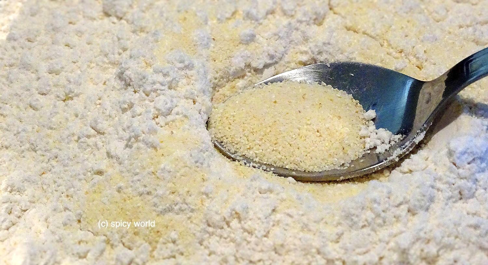
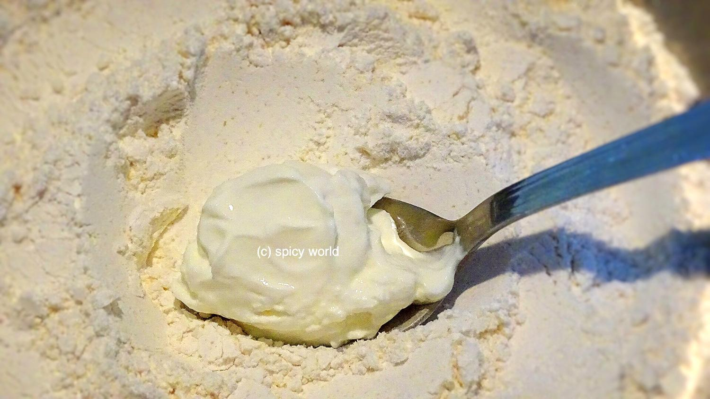
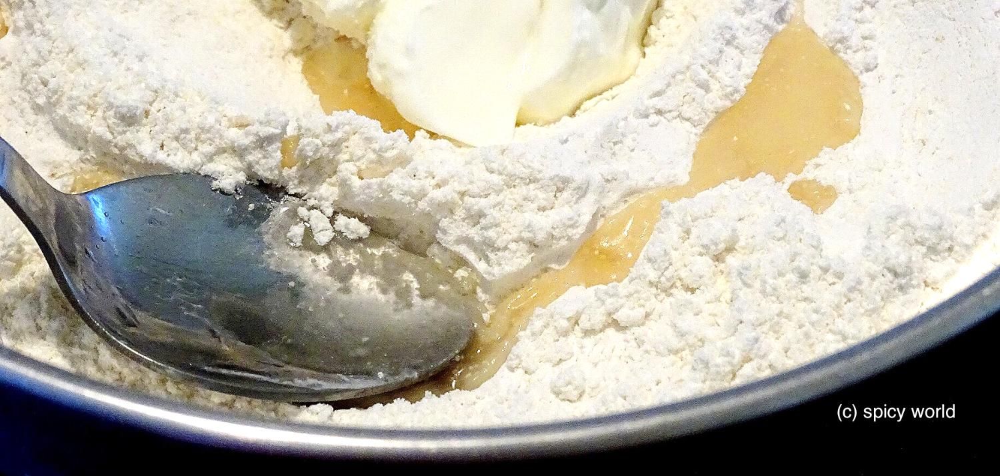
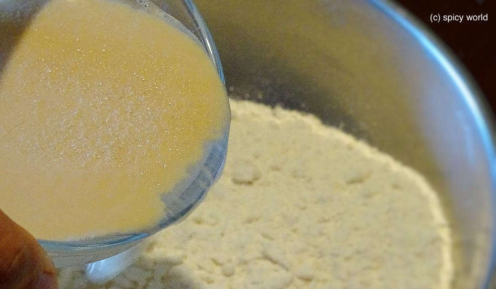
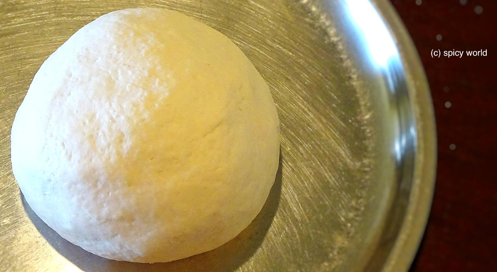
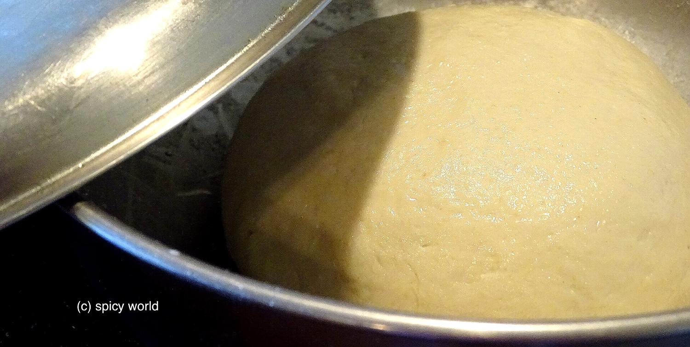
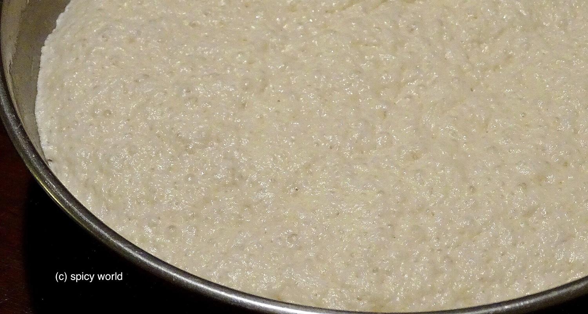
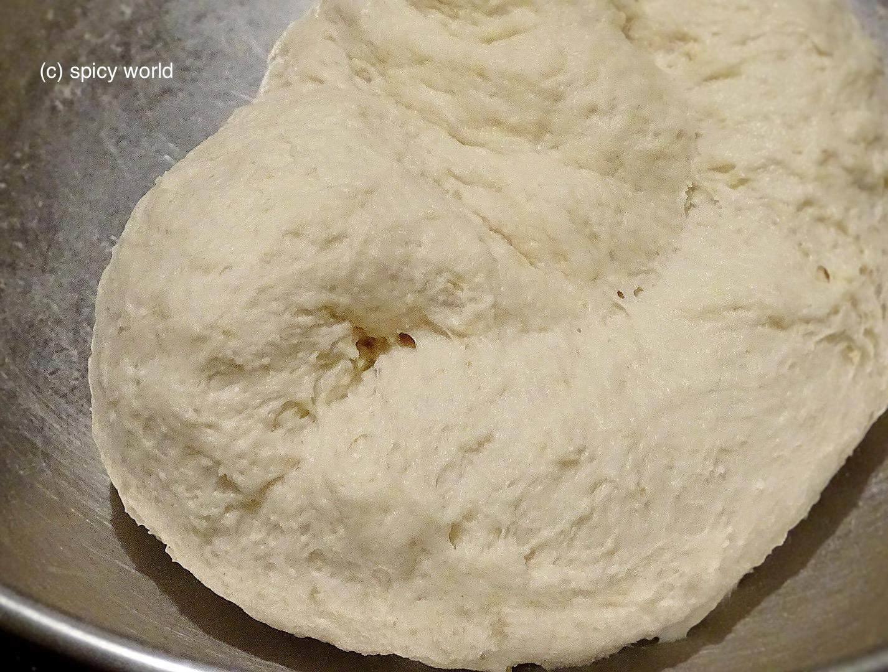
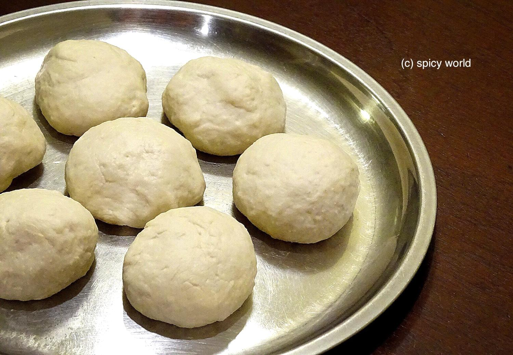
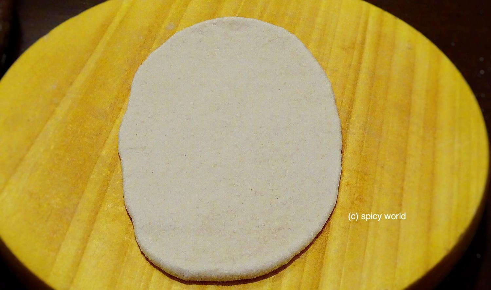
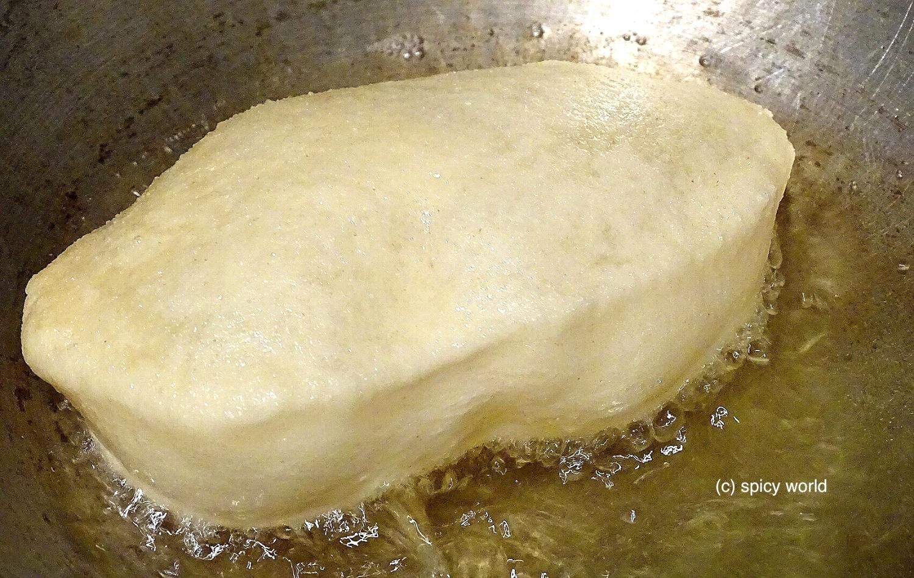
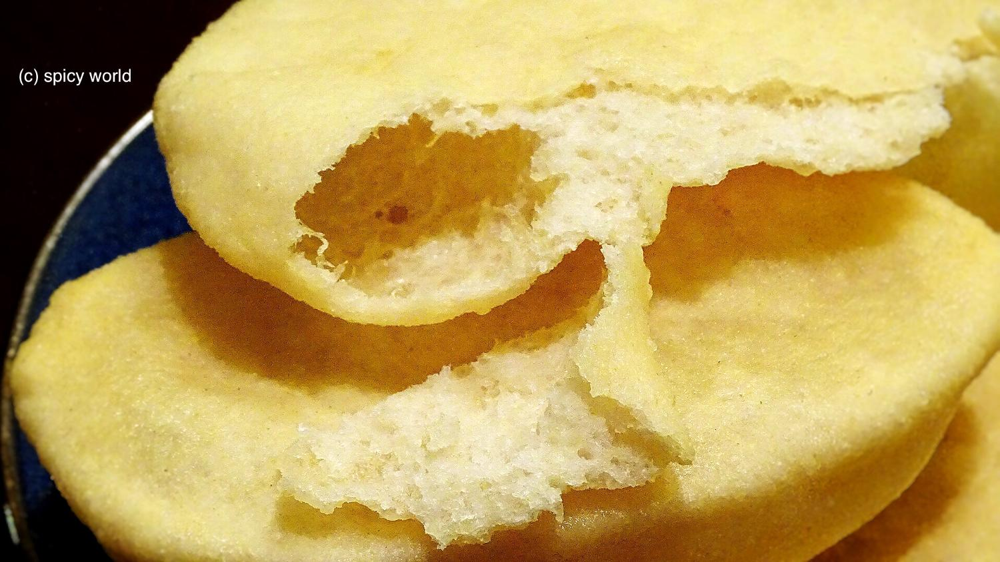
- Enjoy them hot with chola or any spicy curry.
 (Final)")